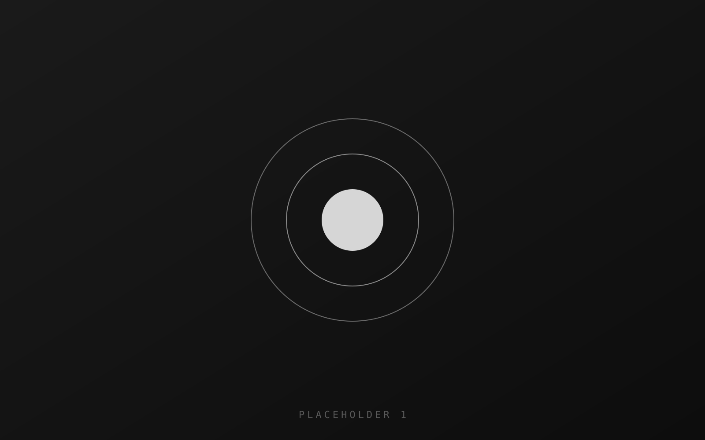
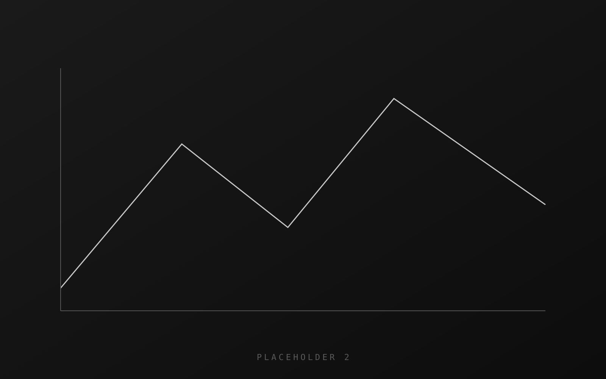
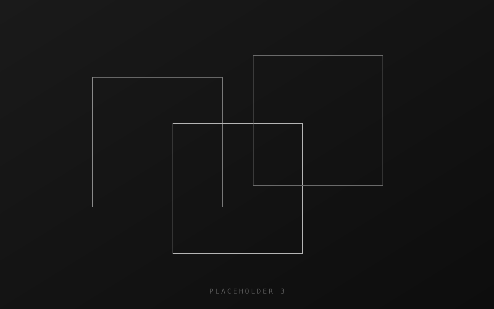

Making uncertain things measurable — from microscopy simulations
to the databases behind industrial process monitoring. Based in Amsterdam.
Work

Depth from blur
MSc thesis
Super-resolution microscopy reaches a resolution the optics alone should not allow,
but only if you know how far a feature sits from the focal plane. Working within my
research team, I built the validation pipeline for the simulations: ground truth in,
reconstructed depth out, error measured across the parameter range.
Against a conventional calibration, the error in depth determination fell by up to
99 percent in simulation. I came to the problem from mechanical engineering and
control, and learned the microscopy on the way in.
simulation
validation
optics
control

The indicators that never turned green
Batenburg Bellt
A client's production monitoring system carried PLC signals through services and a
MySQL database to an operator screen. Two status indicators stayed dark while both
processes were visibly running on the floor.
I put the code, the configuration and the PLC address documentation side by side and
found a database table mapping the signals to the wrong addresses. The fix was
corrected rows — no application code touched. I was in front of the client in my
first week.
PLC
MySQL
debugging
industrial software

Third project
Year
Replace this block with something you want to show — a course project, something you
built on your own, anything with a before and an after. Two short paragraphs: what was
wrong or unknown, what you did, what changed.
tag
tag
tag
About
I am a mechanical engineer in Amsterdam. What draws me in is the seam between a physical
process and the data that is supposed to describe it — signals, databases, measurements,
models — and the work of making the two agree.
My thesis was about making an uncertain measurement certain through modelling and data.
At Batenburg Bellt I met the same problem in industrial software, where a monitoring
system showed something other than what was happening on the floor. I like bringing data
from different sources together into information you can actually steer a process by.
Before that, years of customer-facing work taught me to explain technical things plainly:
what is covered, how the repair will go, why the problem happened in the first place.
I speak Dutch and English fluently, and I pick up new technology quickly.
Experience
Batenburg Bellt
Industrial software
Production monitoring systems built on PLC signals, services and MySQL. Debugging
across the stack, with direct client contact.
Apple
Customer-facing
Explaining coverage, repairs and root causes to customers — including the ones who
arrived angry.
TU Delft
Host
First point of contact for everyone coming through the door.
Tools
MySQL
SQL
Python
MATLAB
PLC signals
simulation
Dutch / English
Contact
Open to roles in data, process automation and industrial systems.